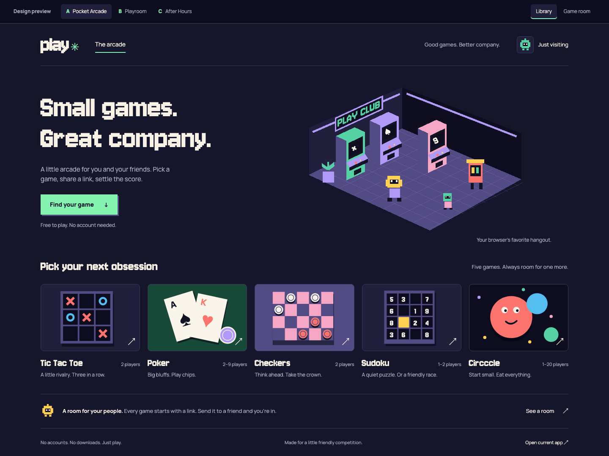
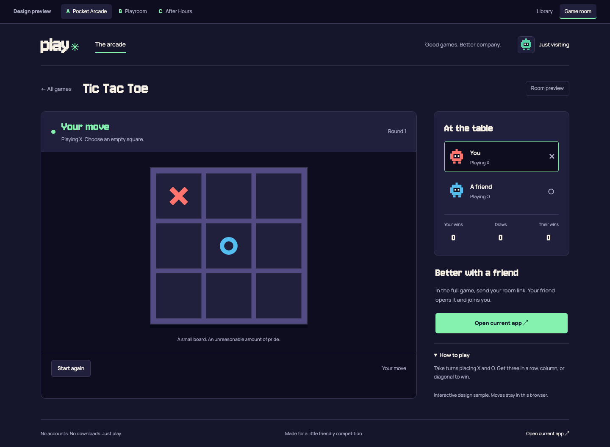
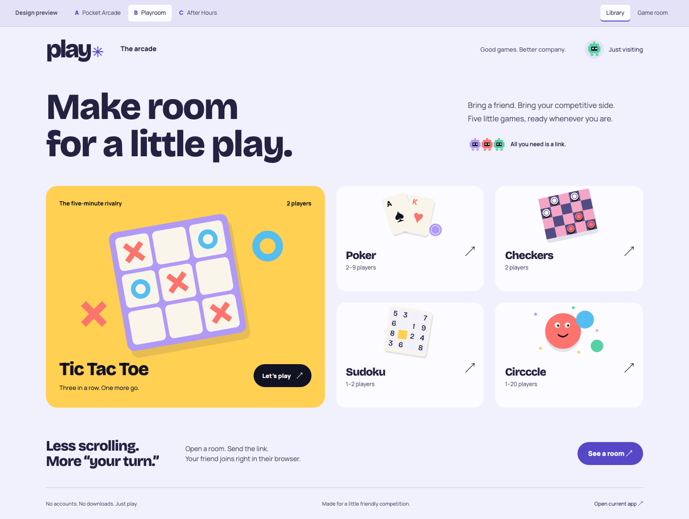
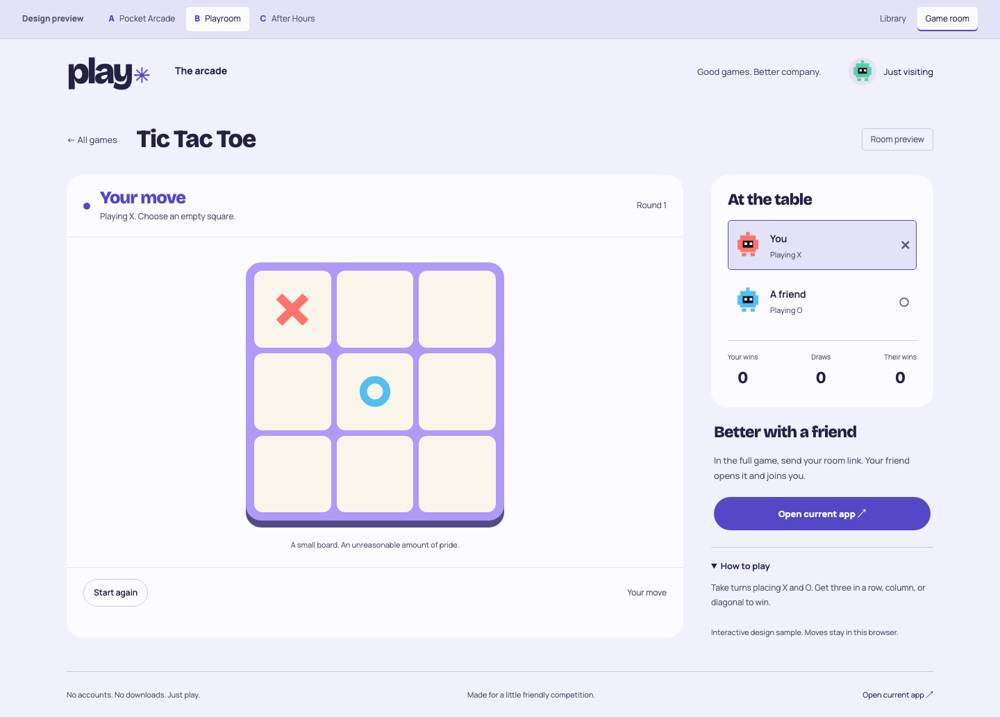
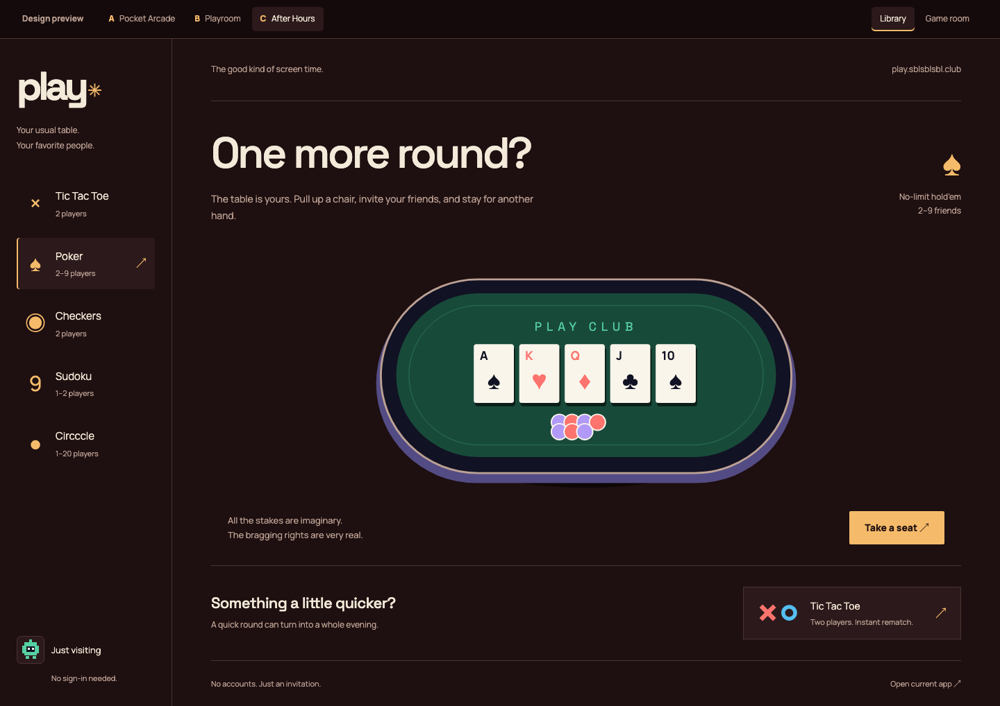
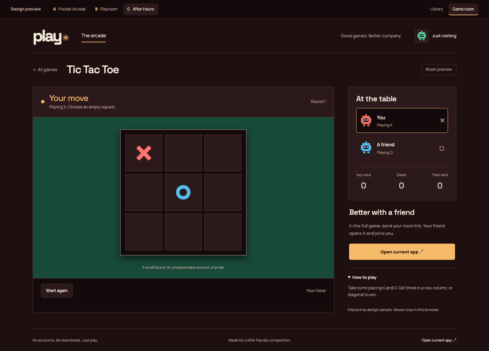

A. Pocket Arcade Recommended
A miniature pixel hangout. Indigo, mint, and an illustrated arcade full of character.

Inside the game room

Real browser captures · Library + game room · October 2026
A miniature pixel hangout. Indigo, mint, and an illustrated arcade full of character.

Inside the game room

Bright, tactile, and friendly. Lilac surfaces, chunky game pieces, and bold typography.

Inside the game room

A late-night games lounge. Oxblood, brass, green felt, and a seat at the table.

Inside the game room
